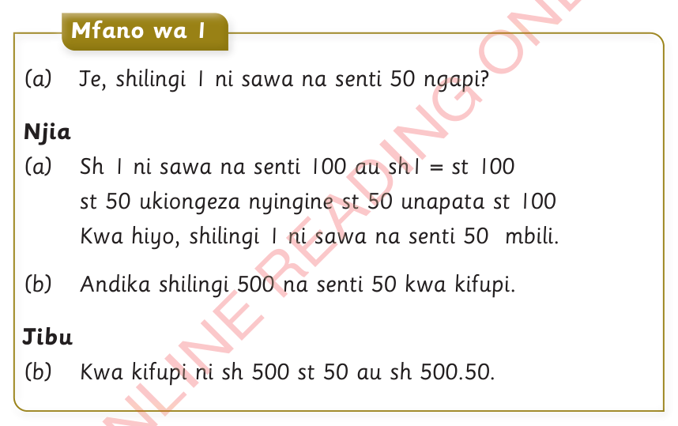
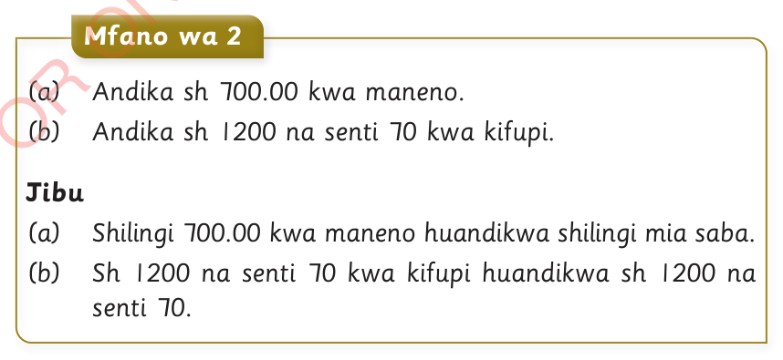

Kuandika fedha ya Tanzania katika shilingi na senti
Jinsi ya kuandika fedha kwenye shilingi, anza na neno shilingi, likifuatiwa na thamani.Vilevile, kwenye senti, anza na neno senti, kisha thamani.Katika numerali, thamani ya fedha ya shilingi na senti hutenganishwa na alama ya nukta.

Mfano wa 1(a) Je, shilingi 1 ni sawa na senti 50 ngapi?Njia(a) Sh 1 ni sawa na senti 100 au sh1 = st 100st 50 ukiongeza nyingine st 50 unapata st 100Kwa hiyo, shilingi 1 ni sawa na senti 50 mbili.(b) Andika shilingi 500 na senti 50 kwa kifupi.Jibu(b) Kwa kifupi ni sh 500 st 50 au sh 500.50.

Mfano wa 2(a) Andika sh 700.00 kwa maneno.(b) Andika sh 1200 na senti 70 kwa kifupi.Jibu(a) Shilingi 700.00 kwa maneno huandikwa shilingi mia saba.(b) Sh 1200 na senti 70 kwa kifupi huandikwa Sh 1200 st 70.